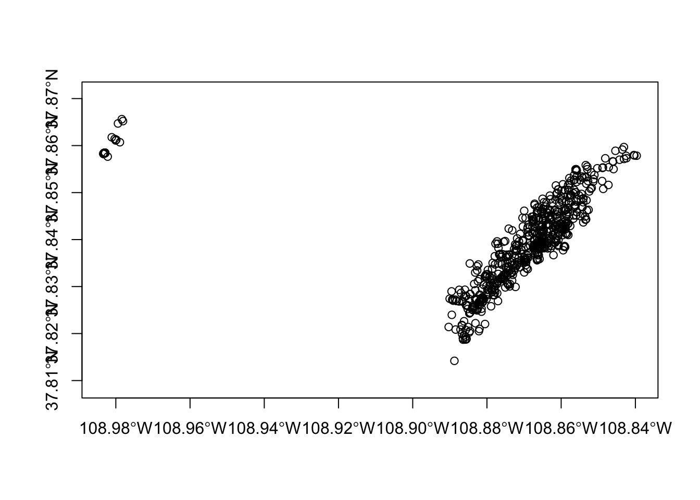
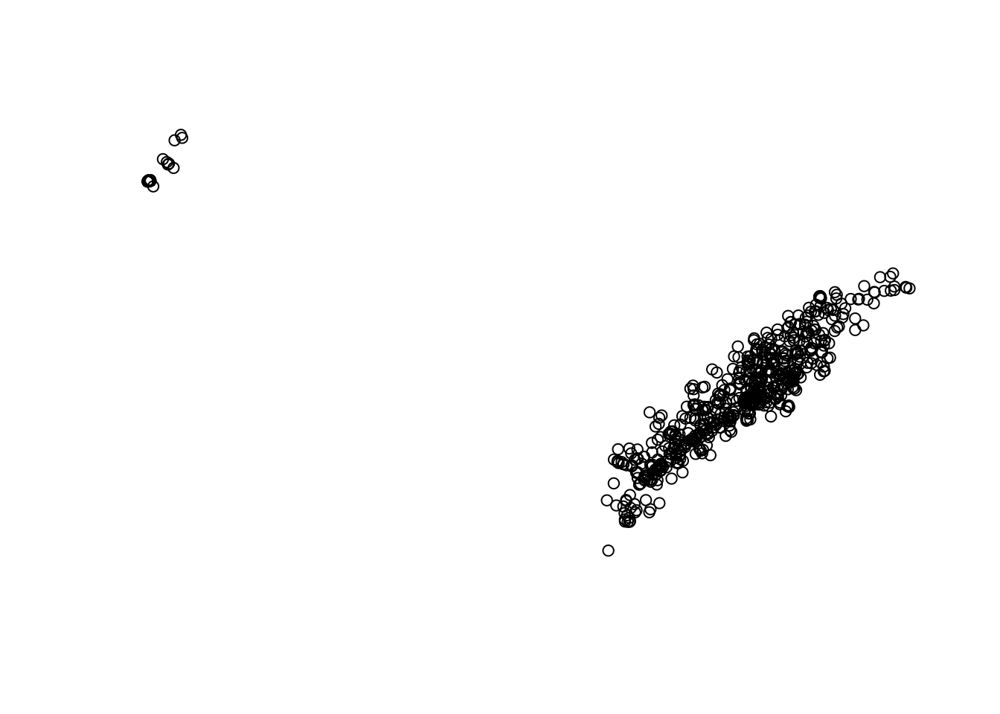
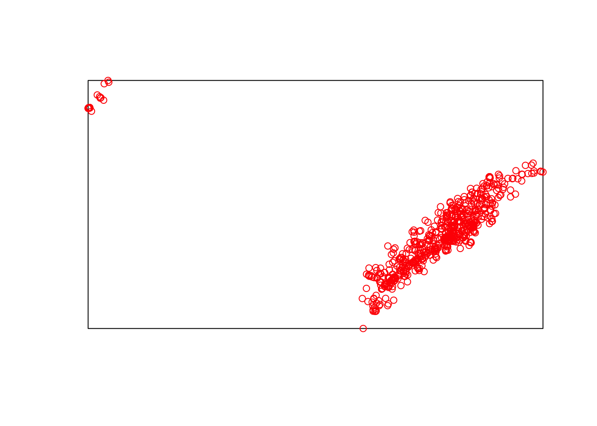
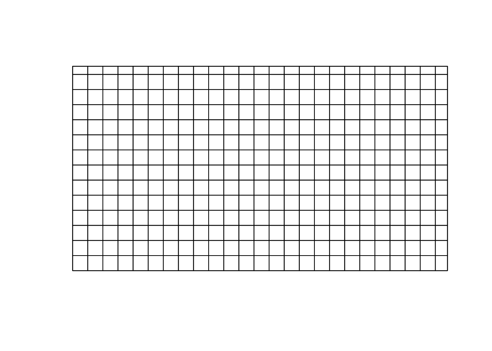
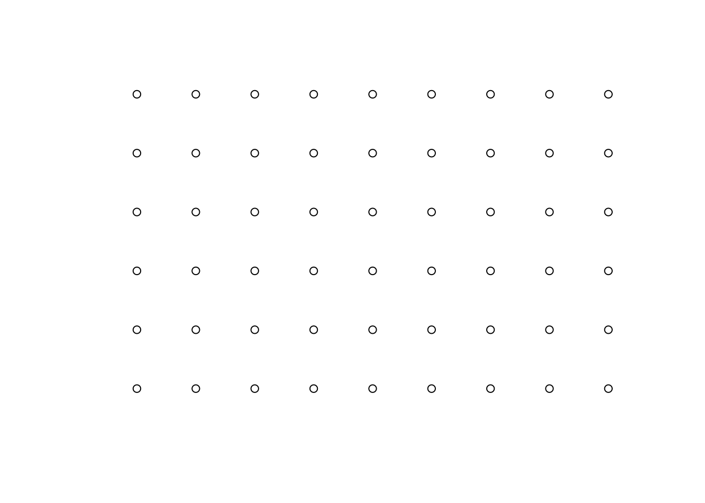
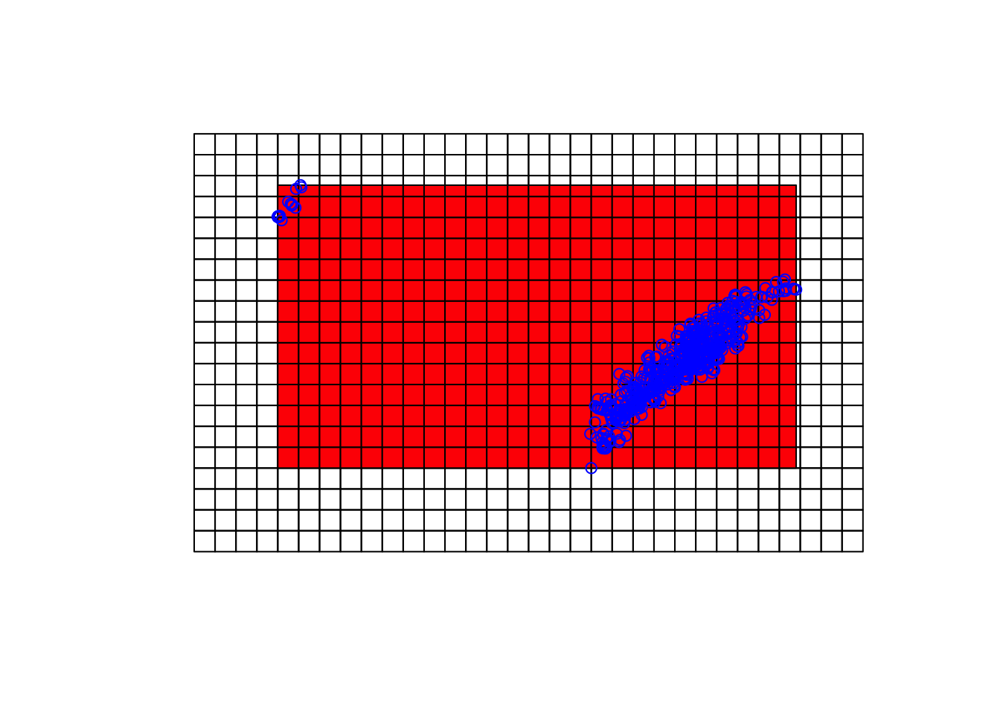
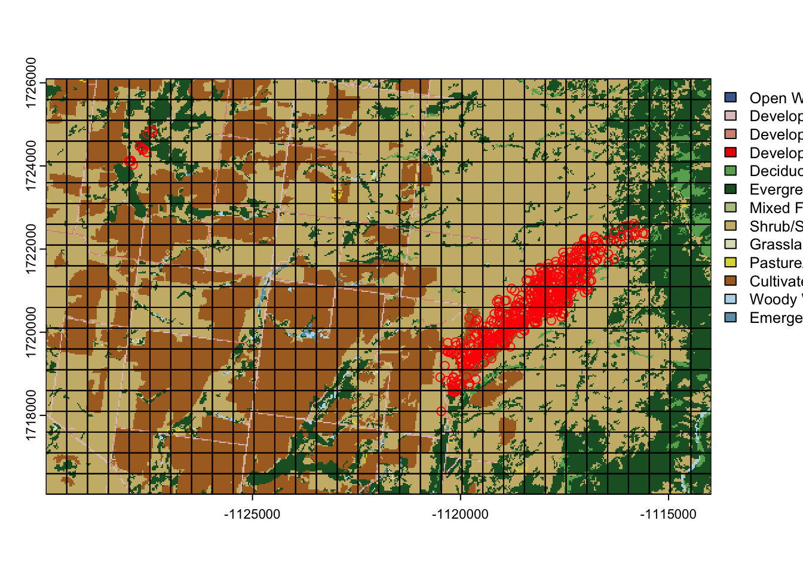
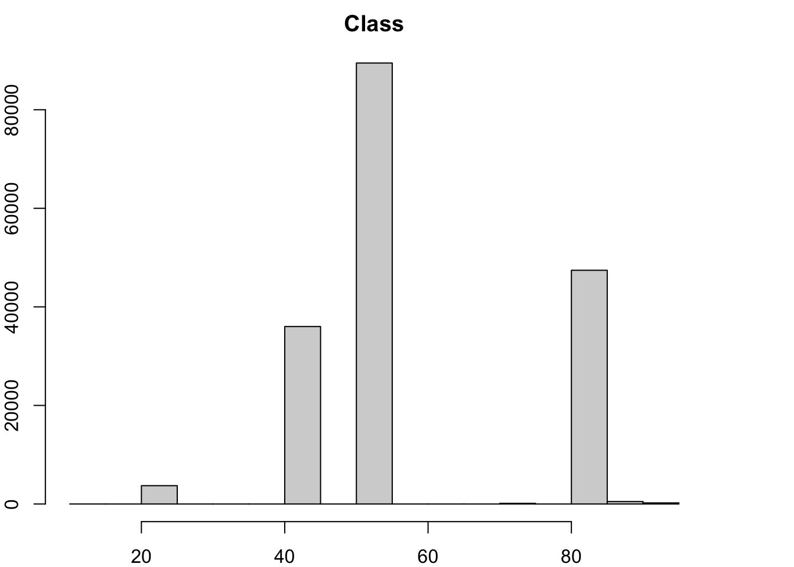

9 Creating a Square Polygon Grid Over a Study Area
1. Open the script “GridSystem2Script.Rmd” and run code directly from the script
2. First we need to load the packages needed for the exercise
3. Now let’s have a separate section of code to include projection information we will use throughout the exercise. In previous versions, these lines of code were within each block of code
4. We need to have all layers in same projection so import, create, and remove outliers for mule deer locations then project all to the Albers projection as we did previously.
#Import the location from earlier exercise
muleys <-read.csv("data/muleysexample.csv", header=T)
#Remove outlier locations
coords <- st_as_sf(muleys, coords = c("Long", "Lat"), crs = ll.crs)
plot(st_geometry(coords),axes=T)
deer.spdf <- st_crop(coords, xmin=-107.0,xmax=-110.5,ymin=37.8,ymax=39.0)#Visually identified based on previous plot
plot(st_geometry(deer.spdf),axes=T)
deer.spdf <-st_transform(deer.spdf, crs=utm.crs)
#Project deer.spdf to Albers as in previous exercise
deer.albers <-st_transform(deer.spdf, crs=albers.crs)
plot(st_geometry(deer.albers,axes=T))
5. Create points for x and y from the bounding box of all mule deer locations with 1500 m spacing between each point.
bb <- st_bbox(deer.albers) %>% st_as_sfc()
#bb <- cbind(x=c(-108.83966,-108.83966,-108.9834,-108.9834, -108.83966),
# y=c(37.8142, 37.86562,37.86562,37.8142,37.8142))
plot(st_geometry(bb))
plot(st_geometry(deer.albers),col="red",add=T)
6. Create a grid of all pairs of coordinates (as a data.frame) using the “expand grid” function and then make it a gridded object.
grid_spacing <- 500
GridPols <- st_make_grid(bb, square = T, cellsize = c(grid_spacing, grid_spacing)) %>% # the grid, covering bounding box
st_intersection(bb) %>%
cbind(data.frame(ID = sprintf(paste("GID%0",nchar(length(.)),"d",sep=""), 1:length(.)))) %>%
st_sf()
plot(st_geometry(bb))
plot(st_geometry(GridPols),add=T)
7. Similar to the hexagonal grid, identify the cell ID that contains each mule deer location.
o = st_intersection(deer.albers,GridPols)Warning: attribute variables are assumed to be spatially constant throughout
all geometrieshead(o)Simple feature collection with 6 features and 21 fields
Geometry type: POINT
Dimension: XY
Bounding box: xmin: -1120488 ymin: 1718097 xmax: -1120110 ymax: 1718916
Projected CRS: NAD83 / Conus Albers
DateTimeAnimalID id Serial Acq_Time Acq_ST
197 D82011.10.20 12:00:00 D8 647578A 2011.10.20 12:00:40 2011.10.20 12:00:00
230 D82011.10.24 15:00:00 D8 647578A 2011.10.24 15:00:48 2011.10.24 15:00:00
231 D82011.10.24 18:00:00 D8 647578A 2011.10.24 18:01:58 2011.10.24 18:00:00
232 D82011.10.24 21:00:00 D8 647578A 2011.10.24 21:00:49 2011.10.24 21:00:00
333 D82011.11.06 18:00:00 D8 647578A 2011.11.06 18:01:04 2011.11.06 18:00:00
328 D82011.11.06 03:00:00 D8 647578A 2011.11.06 03:00:52 2011.11.06 03:00:00
GPSFixTime GPSFixAtt UTM_Zone Y X GPS_Alt
197 2011.10.20 12:00:40 Succeeded (3D) 12S 4187300 685838 2176
230 2011.10.24 15:00:48 Succeeded (3D) 12S 4187827 686114 2237
231 2011.10.24 18:01:58 Succeeded (3D) 12S 4187807 686078 2217
232 2011.10.24 21:00:49 Succeeded (3D) 12S 4187812 686107 2233
333 2011.11.06 18:01:04 Succeeded (3D) 12S 4187805 686032 2222
328 2011.11.06 03:00:52 Succeeded (3D) 12S 4188096 685684 2173
GPS_Speed GPSHeading GPSHorizEr GPS_PD GPS_SB GPS_SC GPS_NT Pre_Data
197 0.05 0.7 18.46 3.4 4227808 6 40 No
230 0.07 0.7 24.00 2.8 134299840 5 48 No
231 0.04 0.7 108.00 4.7 2314 4 118 No
232 0.06 348.0 24.00 3.8 16779290 5 49 No
333 0.03 0.7 45.00 3.3 66314 5 64 No
328 0.02 0.7 48.00 3.8 1318948 5 52 No
Error ID geometry
197 NA GID015 POINT (-1120464 1718097)
230 NA GID016 POINT (-1120110 1718579)
231 NA GID016 POINT (-1120149 1718566)
232 NA GID016 POINT (-1120119 1718566)
333 NA GID016 POINT (-1120193 1718571)
328 NA GID040 POINT (-1120488 1718916)8. If we get some NA errors because our grid does not encompass all mule deer locations then we can expand the grid size extending beyond our locations.
# Create vectors of the x and y points using boundary box created around deer locations
bb1 <- st_bbox(GridPols)
increment = 2000
minx=(min(bb1$xmin)-(increment))
maxx=(max(bb1$xmax)+(increment))
miny=(min(bb1$ymin)-(increment))
maxy=(max(bb1$ymax)+(increment))
# Create vectors of the x and y points using mean size of deer home range of X square kilometers
x=seq(from=minx,to=maxx,by=increment)
y=seq(from=miny,to=maxy,by=increment)
# Create a grid of all pairs of coordinates (as a data.frame)
xy=expand.grid(x=x,y=y)
grid.pts<-st_as_sf(xy, coords = c("x","y"),crs = albers.crs)
plot(st_geometry(grid.pts))
GridPols2 <- st_make_grid(grid.pts, square=T,cellsize = grid_spacing) %>%
cbind(data.frame(ID = sprintf(paste("GID%0",nchar(length(.)),"d",sep=""), 1:length(.)))) %>%
st_sf()
plot(st_geometry(GridPols2))
plot(st_geometry(GridPols),add=T, col="red")
plot(st_geometry(deer.albers),add=T, col="blue")
- Then identify the cell ID that contains each mule deer location from the new expanded grid
##BE SURE TO RUN CODE FROM XY CREATION THROUGH NEW2 AGAIN THEN LOOK AT DATA!!
o2 = st_intersection(deer.albers,GridPols2)Warning: attribute variables are assumed to be spatially constant throughout
all geometries10. Now we can load a vegetation raster layer using the FedData package to summarize vegetation categories within each polygon grid cell.
11. Clip the raster within the extent of the newly created grid
bbclip <- crop(nlcd, GridPols2)
plot(bbclip)
plot(st_geometry(deer.albers),add=T,col="red")
plot(st_geometry(GridPols2), add=T)
#Cell size of raster layer
xres(bbclip)[1] 30#Create histogram of vegetation categories in bbclip
hist(bbclip)
#Calculate cell size in square meters
ii <- st_area(GridPols2)#requires adehabitatMA package
ii[1]250000 [m^2]- We can extract the vegetation characteristics within each polygon of the grid and then tabulate area of each vegetation category within each polygon by extracting vegetation within each polygon by ID then summarizing the vegetation characteristics in each cell to be used in future resource selection analysis or disease epidemiology.
library(exactextractr)
area = exact_extract(bbclip,GridPols2)
|
| | 0%
|
| | 1%
|
|= | 1%
|
|= | 2%
|
|== | 2%
|
|== | 3%
|
|=== | 4%
|
|=== | 5%
|
|==== | 5%
|
|==== | 6%
|
|===== | 7%
|
|===== | 8%
|
|====== | 8%
|
|====== | 9%
|
|======= | 9%
|
|======= | 10%
|
|======= | 11%
|
|======== | 11%
|
|======== | 12%
|
|========= | 12%
|
|========= | 13%
|
|========== | 14%
|
|========== | 15%
|
|=========== | 15%
|
|=========== | 16%
|
|============ | 17%
|
|============ | 18%
|
|============= | 18%
|
|============= | 19%
|
|============== | 19%
|
|============== | 20%
|
|============== | 21%
|
|=============== | 21%
|
|=============== | 22%
|
|================ | 22%
|
|================ | 23%
|
|================= | 24%
|
|================= | 25%
|
|================== | 25%
|
|================== | 26%
|
|=================== | 27%
|
|=================== | 28%
|
|==================== | 28%
|
|==================== | 29%
|
|===================== | 29%
|
|===================== | 30%
|
|===================== | 31%
|
|====================== | 31%
|
|====================== | 32%
|
|======================= | 32%
|
|======================= | 33%
|
|======================== | 34%
|
|======================== | 35%
|
|========================= | 35%
|
|========================= | 36%
|
|========================== | 37%
|
|========================== | 38%
|
|=========================== | 38%
|
|=========================== | 39%
|
|============================ | 39%
|
|============================ | 40%
|
|============================ | 41%
|
|============================= | 41%
|
|============================= | 42%
|
|============================== | 42%
|
|============================== | 43%
|
|=============================== | 44%
|
|=============================== | 45%
|
|================================ | 45%
|
|================================ | 46%
|
|================================= | 47%
|
|================================= | 48%
|
|================================== | 48%
|
|================================== | 49%
|
|=================================== | 49%
|
|=================================== | 50%
|
|=================================== | 51%
|
|==================================== | 51%
|
|==================================== | 52%
|
|===================================== | 52%
|
|===================================== | 53%
|
|====================================== | 54%
|
|====================================== | 55%
|
|======================================= | 55%
|
|======================================= | 56%
|
|======================================== | 57%
|
|======================================== | 58%
|
|========================================= | 58%
|
|========================================= | 59%
|
|========================================== | 59%
|
|========================================== | 60%
|
|========================================== | 61%
|
|=========================================== | 61%
|
|=========================================== | 62%
|
|============================================ | 62%
|
|============================================ | 63%
|
|============================================= | 64%
|
|============================================= | 65%
|
|============================================== | 65%
|
|============================================== | 66%
|
|=============================================== | 67%
|
|=============================================== | 68%
|
|================================================ | 68%
|
|================================================ | 69%
|
|================================================= | 69%
|
|================================================= | 70%
|
|================================================= | 71%
|
|================================================== | 71%
|
|================================================== | 72%
|
|=================================================== | 72%
|
|=================================================== | 73%
|
|==================================================== | 74%
|
|==================================================== | 75%
|
|===================================================== | 75%
|
|===================================================== | 76%
|
|====================================================== | 77%
|
|====================================================== | 78%
|
|======================================================= | 78%
|
|======================================================= | 79%
|
|======================================================== | 79%
|
|======================================================== | 80%
|
|======================================================== | 81%
|
|========================================================= | 81%
|
|========================================================= | 82%
|
|========================================================== | 82%
|
|========================================================== | 83%
|
|=========================================================== | 84%
|
|=========================================================== | 85%
|
|============================================================ | 85%
|
|============================================================ | 86%
|
|============================================================= | 87%
|
|============================================================= | 88%
|
|============================================================== | 88%
|
|============================================================== | 89%
|
|=============================================================== | 89%
|
|=============================================================== | 90%
|
|=============================================================== | 91%
|
|================================================================ | 91%
|
|================================================================ | 92%
|
|================================================================= | 92%
|
|================================================================= | 93%
|
|================================================================== | 94%
|
|================================================================== | 95%
|
|=================================================================== | 95%
|
|=================================================================== | 96%
|
|==================================================================== | 97%
|
|==================================================================== | 98%
|
|===================================================================== | 98%
|
|===================================================================== | 99%
|
|======================================================================| 99%
|
|======================================================================| 100%classes <- sort(unique(bbclip[]))
combine <- lapply(area, FUN=function(x) { as.data.frame(prop.table(table(factor(x[,1],
levels = classes))))} )
head(combine)[[1]]
Var1 Freq
1 11 0.00000000
2 21 0.00000000
3 22 0.00000000
4 23 0.00000000
5 41 0.00000000
6 42 0.00000000
7 43 0.00000000
8 52 0.92733564
9 71 0.00000000
10 81 0.00000000
11 82 0.07266436
12 90 0.00000000
13 95 0.00000000
[[2]]
Var1 Freq
1 11 0.00000000
2 21 0.00000000
3 22 0.00000000
4 23 0.00000000
5 41 0.00000000
6 42 0.05228758
7 43 0.00000000
8 52 0.83986928
9 71 0.00000000
10 81 0.00000000
11 82 0.10784314
12 90 0.00000000
13 95 0.00000000
[[3]]
Var1 Freq
1 11 0.00000000
2 21 0.06535948
3 22 0.00000000
4 23 0.00000000
5 41 0.00000000
6 42 0.00000000
7 43 0.00000000
8 52 0.93464052
9 71 0.00000000
10 81 0.00000000
11 82 0.00000000
12 90 0.00000000
13 95 0.00000000
[[4]]
Var1 Freq
1 11 0.000000000
2 21 0.076124567
3 22 0.024221453
4 23 0.000000000
5 41 0.000000000
6 42 0.013840830
7 43 0.000000000
8 52 0.882352941
9 71 0.000000000
10 81 0.000000000
11 82 0.003460208
12 90 0.000000000
13 95 0.000000000
[[5]]
Var1 Freq
1 11 0.000000000
2 21 0.026143791
3 22 0.000000000
4 23 0.000000000
5 41 0.000000000
6 42 0.196078431
7 43 0.000000000
8 52 0.549019608
9 71 0.000000000
10 81 0.003267974
11 82 0.225490196
12 90 0.000000000
13 95 0.000000000
[[6]]
Var1 Freq
1 11 0.0000000
2 21 0.0000000
3 22 0.0000000
4 23 0.0000000
5 41 0.0000000
6 42 0.3986928
7 43 0.0000000
8 52 0.4052288
9 71 0.0000000
10 81 0.0000000
11 82 0.1960784
12 90 0.0000000
13 95 0.0000000